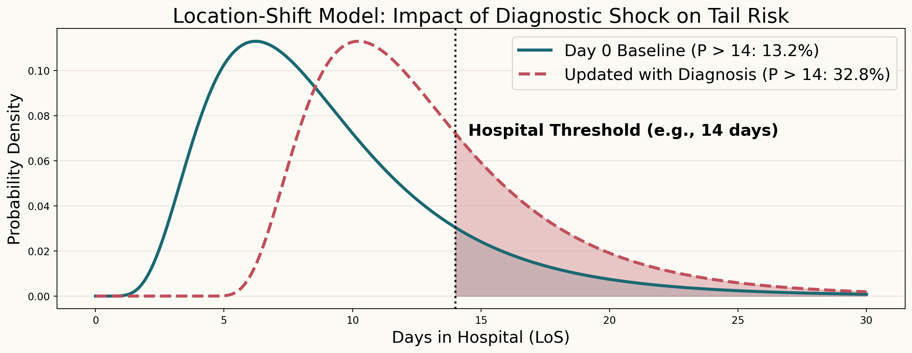

import numpy as np
import matplotlib.pyplot as plt
from scipy.stats import lognorm
# Set theme colors to match your presentation
color_baseline = "#1A6872"
color_shifted = "#BF505C"
threshold = 14
plt.rcParams['figure.facecolor'] = '#FBFAF4'
plt.rcParams['axes.facecolor'] = '#FBFAF4'
# Generate synthetic LoS data (Log-Normal)
# Baseline: Mean LoS ~8 days
s, loc, scale = 0.5, 0, 8
x = np.linspace(0, 30, 500)
pdf_baseline = lognorm.pdf(x, s, loc, scale)
# Shifted: Diagnostic penalty adds a +4 day shift to the location
pdf_shifted = lognorm.pdf(x, s, loc + 4, scale)
# Calculate Probabilities P(LoS > 14)
prob_baseline = 1 - lognorm.cdf(threshold, s, loc, scale)
prob_shifted = 1 - lognorm.cdf(threshold, s, loc + 4, scale)
# Plotting
plt.figure(figsize=(15, 5), facecolor="#FBFAF4")
ax = plt.gca()
ax.set_facecolor("#FBFAF4")
# 1. Baseline Plot
plt.plot(x, pdf_baseline, color=color_baseline, lw=3, label=f'Day 0 Baseline (P > 14: {prob_baseline:.1%})')
plt.fill_between(x, 0, pdf_baseline, where=(x > threshold), color=color_baseline, alpha=0.2)
# 2. Shifted Plot
plt.plot(x, pdf_shifted, color=color_shifted, lw=3, linestyle="--", label=f'Updated with Diagnosis (P > 14: {prob_shifted:.1%})')
plt.fill_between(x, 0, pdf_shifted, where=(x > threshold), color=color_shifted, alpha=0.3)
# Threshold Line
plt.axvline(threshold, color="black", linestyle=":", lw=2)
plt.text(threshold+0.5, plt.ylim()[1]*0.6, f"Hospital Threshold (e.g., {threshold} days)", rotation=0, fontweight="bold", fontsize=16)
plt.title("Location-Shift Model: Impact of Diagnostic Shock on Tail Risk", fontsize=20)
plt.xlabel("Days in Hospital (LoS)", fontsize=16)
plt.ylabel("Probability Density", fontsize=16)
plt.legend(fontsize=16)
plt.grid(axis='y', alpha=0.3)
plt.show()